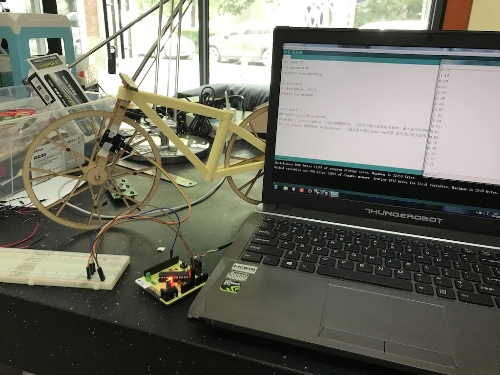

hhhhhhhh
Fablab
Home
About me
schedule
works
tools
After having done the wheels and frame, I started to test the meter.
hall sensor is a sensor has response to magnet.
So I can get the duration between every time it found a magnet

Previous
Next